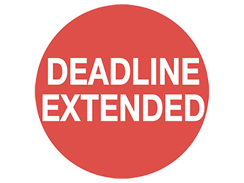

Transferne cene su cena nastale u vezi sa transakcijama među povezanim licima. Društva su dužna da transakcije sa povezanim licima prikažu u svom poreskom bilansu.
Povezana lica su fizička ili pravna lica koja mogu kontrolisati ili značajno uticati na odluke društva, odnosno koja imaju 25% ili više udela ili akcija ili glasova u organima upravljanja društva. Takođe, povezanim licima smatraju se i pravna lica u kojima ista pravna ili fizička lica učestvuju u upravljanju, kapitalu ili kontroli, kao i bračni ili vanbračni drug, potomci, usvojenici i potomci usvojenika, roditelji, usvojioci, braća i sestre i njihovi potomci, dedovi i babe i njihovi potomci, kao i braća i sestre i roditelji bračnog ili vanbračnog druga. Svako nerezidentno pravno lice...
saznaj više
Agencija za privredne registre objavila je 4.februara na svom sajtu obaveštenje da je rok za dostavljanje izveštaja za statističke potrebe za 2014. godinu produžen do 31. marta 2015. godine.
Razlog produženja roka jeste neophodnost uspostavljanja novog informacionog sistema APR-a. Prema saopštenju Agencije, očekuje se da do 28. februara informacioni sistem i uputstva za njegovu primenu budu na raspolaganju obveznicima.
U saopštenju se, takođe, podsećaju zakonski zastupnici da je neophodno da obezbede kvalifikovani elektronski potpis kako bi finansijski izveštaj kao elektronski dokument bio potpisan u skadu sa najnovijim propisima.
Kamata za neblagovremeno plaćeni porez i ostale javne prihode iznosi 18%. Ova stopa utvrđuje se svakog meseca, a u zavisnosti od kretanja referentne kamatne stope.
Kamata se utvrđuje na sledeći način: godišnja referentna kamatna stopa + 10%.
Referentna kamatna stopa trenutno iznosi 8%, a ponovo se utvrđuje 12.februara 2015.godine.
Obračun kamate na dugovani porez i sporedna poreska davanja, osim kamate, vrši se počev od narednog dana od dana dospelosti, bez pripisa kamate glavnici po isteku obračunskog perioda.
Na iznos više plaćenog poreza i ostalih poreskih davanja, osim kamate, kamata se obračunava po isteku roka od 30 dana od dana prijema zahteva za povraćaj od strane nadležnog organa, osim u slučaju poništenog ili izmenjenog rešenja kada se kamata obračunava od dana uplate poreza. Obvezniku PDV-a se kamata na više plaćeni porez obračunava od narednog dana od dana isteka roka za povraćaj poreza koji je definisan zakonom o pdv-u. U slučaju donošenja rešenja kojim se odobrava pravo na refakciju odnosno refundaciju poreza, kamata se obračunava po isteku roka od 30 dana od dana donošenja rešenja.
Odluka Grada Beograda o naknadi za zaštitu i unapređivanje životne sredine stupila je na snagu 1.januara 2015.godine. Obveznici plaćanja naknade su vlasnici nepokretnosti, odnosno zakupci u slučaju da se ona izdaje. Od obaveze su izuzeti (pored državnih organa i ogranizacija) i oni koji su obveznici plaćanja naknade za zagađivanje žitvotne sredine i naknade za zagađivanje područja od posebnog državnog interesa.
Nanada se plaća mesečno:
Naknada se uplaćuje na račun: 840 714562 843 56
Novčane kazne za nepodnošenje prijave ili kašnjenje iznose od 50.000-250,000 dinara za pravno lice, odnosno od 20.000 do 100.000 dinara za preduzetnika.
Privredni subjekti koji koriste poslovne prostorije i poslovne zgrade za obavljanje poslovne delatnosti, kao i oni koji koriste stanove isključivo za obavljanje poslovne delatnosti imaju obavezu da podnesu prijavu (Obrazac P EKO) nadležnom odeljenju Uprave javnih prihoda najkasnije do 31.januara 2015.godine.
Agenciji za privredne registre је objavila na svom sajtu obaveštenje u vezi sa potpisivanjem izveštaja za statističke potrebe i finansijskih izveštaja. Prema obaveštenju, navedene izveštaje potpisuju isključivo zakonski zastupnici, odnosno preduzetnik svojim kvalifikovanim elektronskim potpisom, koji su kao takvi upisani u registru. Neophodno je, dakle, da zakonski zastupnik odnosno preduzetnik pribave kvalifikovani elektronski potpis (preko MUP-a, Halcoma, Pošte Srbije, Privredne komore Srbije), kako bi mogli da potpišu finansijske izveštaje i izveštaje za statističke potrebe.
Izveštaji za statističke potrebe i finansijski izveštaji koje potpišu ostali zastupnici ili prokuristi neće se prihvatiti kao ispravni (potpuni) u smislu člana 36. Zakona o računovodstvu.
Izvor: Agencija za privredne registre, 21.01.2015.
Izveštaj o promenama na kapitalu za 2014.godinu sastavljaju i mala pravna lica, po prvi put. Ovaj izveštaj sastavlja se u skladu sa Pravilnikom o sadržini i formi obrazaca finansijskih izveštaja za privredna društva, zadruge i preduzetnike, Međunarodnim računovodstvenim standardom - MRS 1 Prezentacija finansijskih izveštaja, Međunarodnim računovodstvenim standardom - MRS 8 Računovodstvene politike, promene računovodstvenih procena i greške, Odeljkom 6 Izveštaj o promenama na kapitalu i Izveštaj o rezultatu i neraspoređenoj dobiti, MSFI za MSP, kao i Odeljkom 10 Računovodstvene politike, procene i greške MSFI za MSP.
U izveštaju treba prikazati kako ukupan zbirni rezultat za taj period (uz posebno iskazivanje iznosa koji se odnose na većinske...
saznaj više